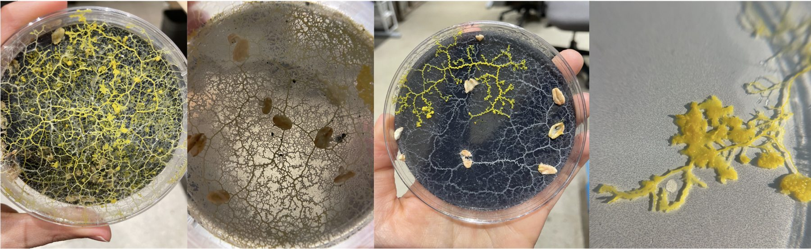
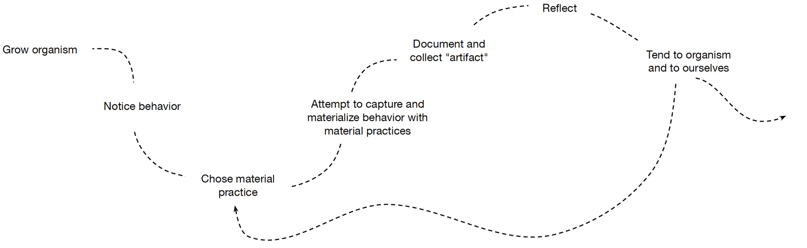
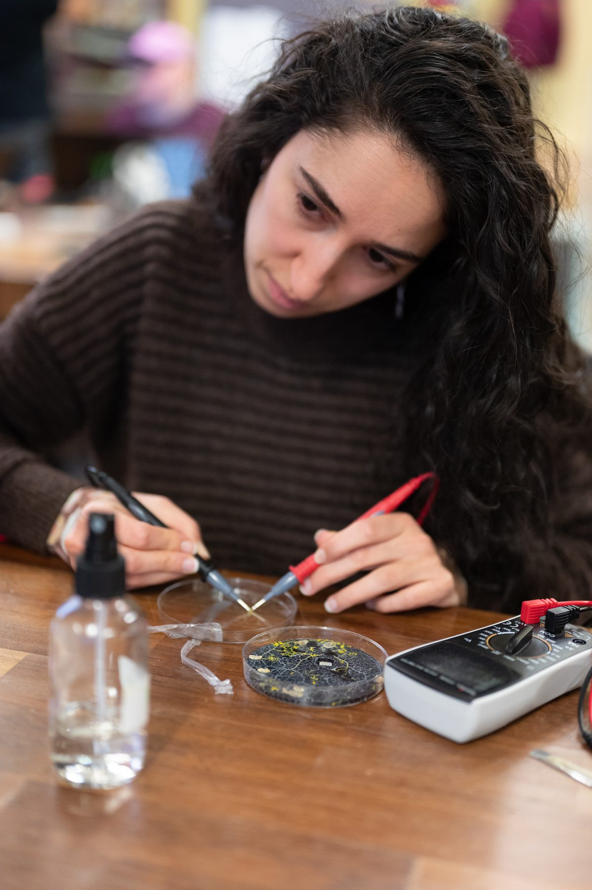
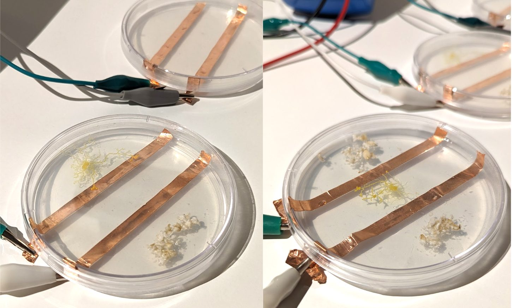

This work proposes tracing as a material practice that surfaces insights on care and relation in the rich space between the human-designer and organism. Using creative material practices to richly follow and explore the behaviors of the nonhuman living organism (in this work, slime mold, i.e., Physarum polycephalum), we capture both the slime mold’s ways and our own, inviting us to observe our actions to facilitate its life. I traced slime mold through visualizations, embodied experiences, and sonifying electrical resistance, all acting as “arts of noticing” within the motivation of stepping out of our own perspectives and ways of viewing the world, and an aim to take on other ones. By tracing experiences of growing and making with slime mold, we re-orient toward nonhuman perspectives and discuss how such practices might advance capacities of design research.
Published as a full paper at DIS 2024.
The process of tracing:

Three tracing explorations of slime mold:



Sonification of electrical resistance captured over the course of 8 days.